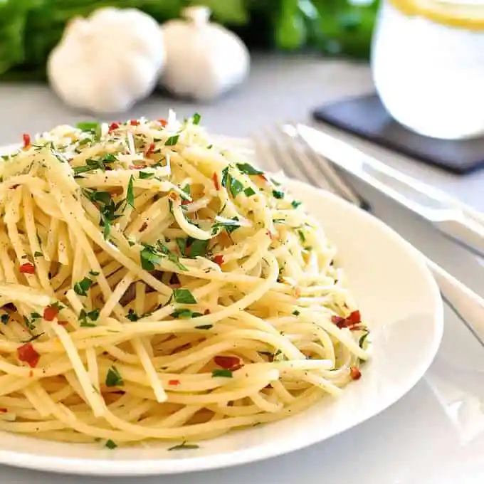

Pasta Recipe

What does Pasta mean
These pasta recipes are simple Italian classics you'll find in trattorias all across Italy. “Pantry” meals that take less than 15 minutes to make, each makes enough for 6 people. For all recipes, follow the Base Steps then move onto the recipe specific steps. Click here for a PDF printable version of all these recipes on one page.
tossing the sauce with the cooked pasta and a splash of pasta cooking water. The fat in the sauce reacts with the starch in the cooking water, thickening the sauce and making it stick to the pasta strands.
Ingredients
- 1/2 cup extra virgin olive oil
- 10 garlic cloves , sliced
- 1 tbsp red chilli flake
- 1/4 cup chopped parsley
- 1 lb/500 g dried spaghetti (or other long pasta)
Steps
- Cook 1lb/500g of dried spaghetti (or any other long dried pasta) in a large pot of salted boiling water per packet MINUS 1 minute.
- Meanwhile, prepare one of the sauces below.
- When pasta is ready, scoop out 1 cup of pasta cooking water, and drain pasta.
- Heat oil over medium high heat. Add garlic and cook until golden - be careful not to burn it.
- Toss with pasta and cooking water per Base Directions. Toss through parsley and chilli flakes, serve with parmesan.